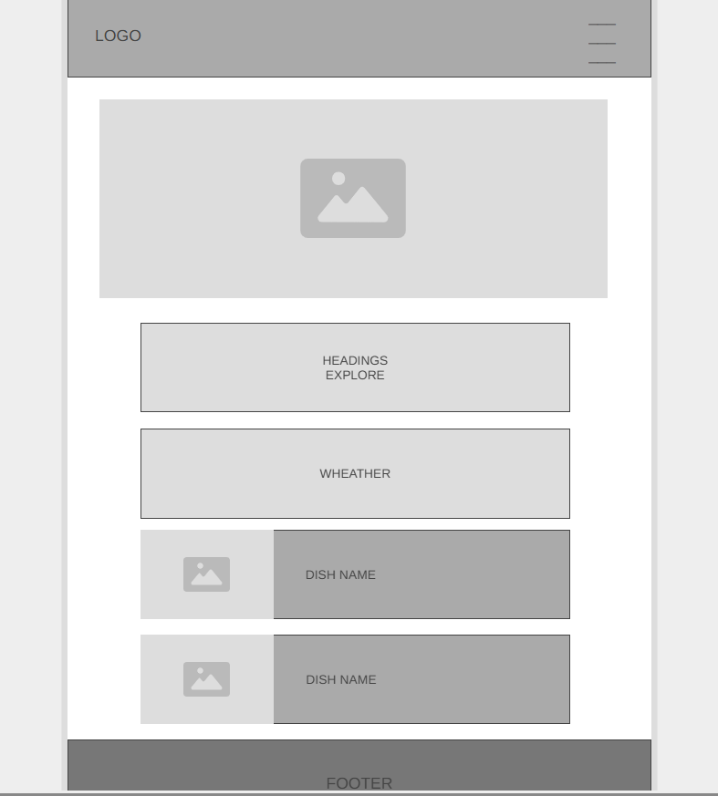
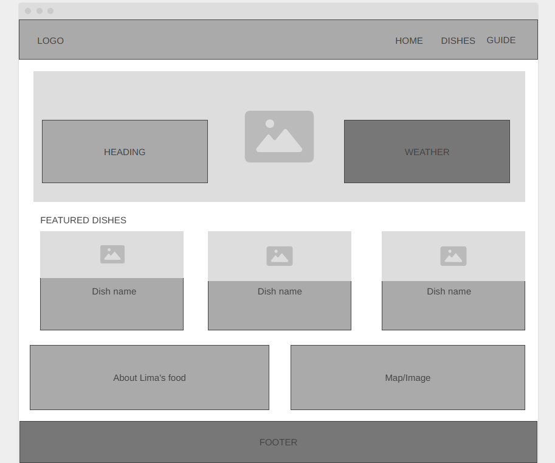

1. Site Name
Lima Sabor | Suggested domain: limasabor.com
"Sabor" means flavor in Spanish. It immediately communicates the site's focus on food while keeping the Lima reference front and center. The name is short, memorable, and easy to pronounce for both Spanish and English speakers, making it effective for an international tourist audience.
2. Site Purpose
Lima Sabor serves as a gastronomic tourism guide for Lima, Peru. The site provides visitors and tourists with curated information about Lima's iconic dishes, the history behind them, and neighborhood-by-neighborhood restaurant and market recommendations. It also displays real-time weather data for Lima via a weather API, helping users decide the best time to explore the city's outdoor dining and market scene.
3. Scenarios
Questions a target visitor might ask when visiting the site:
- Scenario 1: "I'm visiting Lima next week, what are the must-try traditional dishes I should not leave without eating?"
- Scenario 2: "Where in Lima can I find authentic ceviche or local markets to experience Peruvian food culture?"
- Scenario 3: "What is the weather like in Lima right now. Is it a good day to visit an outdoor market or eat out?"
4. Color Scheme
5. Typography
Font 1 — Playfair Display (Headings)
Used for: H1, H2, page titles, section headers
Discover Lima's Flavors
Font 2 — Lato (Body)
Used for: body text, navigation, labels, buttons, captions Lima is widely recognized as one of the world's top gastronomic destinations, offering everything from street food to world-class restaurants.
6. Wireframe — Home Page
Layout sketches for the home page in mobile and desktop viewports.

Mobile (< 640px)

Desktop / Tablet (> 768px)